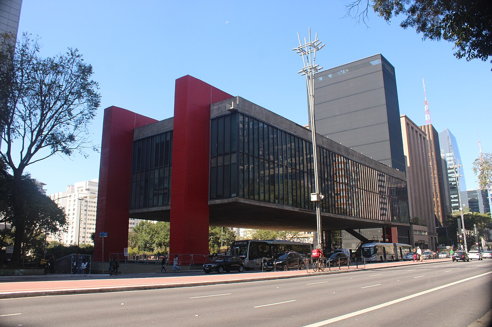
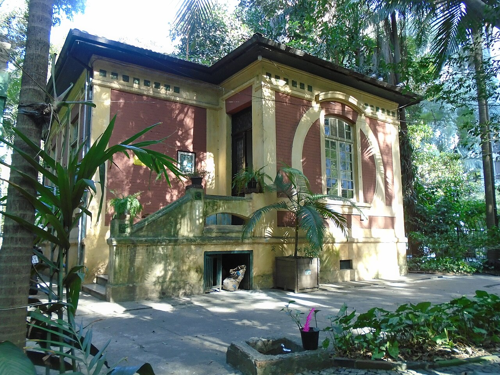
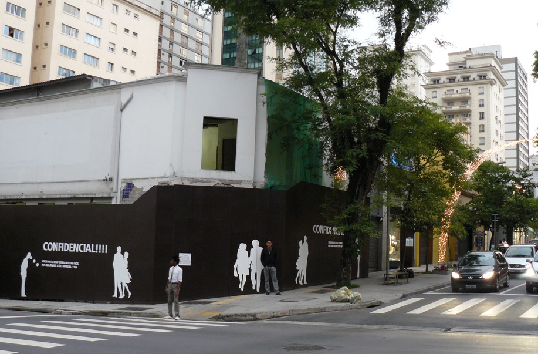

After check-in, before our 7pm dinner
This is the one chance we'll have to see the city — so we're keeping it simple. A flat, easy loop straight out the front door of the Renaissance. Wear comfy shoes, bring a phone and a camera, and take your time. If anyone gets tired, we grab an Uber back.

MASP — the red museum on stilts
São Paulo's most famous building: a glass box hanging under two giant red concrete beams. Walk into the open plaza underneath and look straight up — that's the photo everyone takes. The outside is the highlight and it's free; we'll skip going inside to save time.

Trianon Park — a rainforest across the street
Right across the avenue from MASP: a surviving pocket of original Atlantic rainforest tucked between the skyscrapers — huge old trees, shady paths, and birdsong. We'll do a quick 10-minute loop. Open daily until 6pm.

Rua Oscar Freire — the stylish street
Brazil's most stylish street: the Havaianas flagship, Brazilian designers, and cafés — perfect for window-shopping and people-watching. (No gelato needed — we've already had our sorbet!) From here it's a short walk (or quick Uber) back to the Renaissance.
📍 How to follow it on your phone
Three easy ways to keep from getting lost:
- Tap the big green button above — it opens the whole loop in the Google Maps app in walking mode. Hit Start for turn-by-turn directions the whole way.
- Or save each stop as a pin so they all show on your map — open each and tap Save into a list called "SP walk":
- Before we head out, download the area for offline use: in Google Maps tap your profile photo → Offline maps → Select your own map, and save the Avenida Paulista area — in case the signal is spotty.